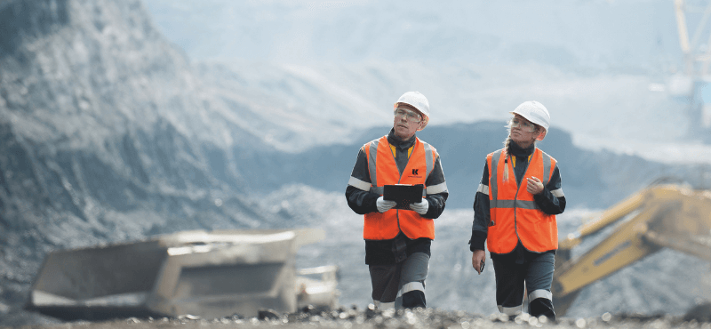

Alfred H Knight cuenta con más de 140 años de experiencia en la prestación de servicios independientes de análisis e inspección para la industria de metales y minerales, y ha aprovechado dicha experiencia para expandirse a los sectores de combustibles sólidos y agricultura. Gozamos de una sólida reputación por nuestro conocimiento y profesionalismo en todos los aspectos de pesaje, muestreo y análisis. Nuestros servicios pueden prestarse tanto in situ, en cualquier ubicación, como de forma remota a través de nuestra red global de expertos.
| ✔ Auditorías técnicas: | Operaciones de pesaje y muestreo | |
| ✔ Auditorías técnicas: | Procesos e instalaciones para la preparación de muestras | |
| ✔ Auditorías técnicas: | Laboratorios | |
| ✔ Realización de formación de personal a medida | ✔ Soporte analítico | ✔ Gestión de laboratorio |
| ✔ Servicio de apoyo a la industria minera | ✔ Eficiencia de las operaciones de la planta | ✔ Servicios de semillas y cultivos |
| ✔ Seguimiento de las tasas de aplicación | ✔ Seguimiento de productos | ✔ Muestreo previo a la cosecha y mapeo de la trazabilidad en campo |
| ✔ auditorías agrícolas | ✔ Monitoreo del algodón en rama y análisis de eventos de ADN |